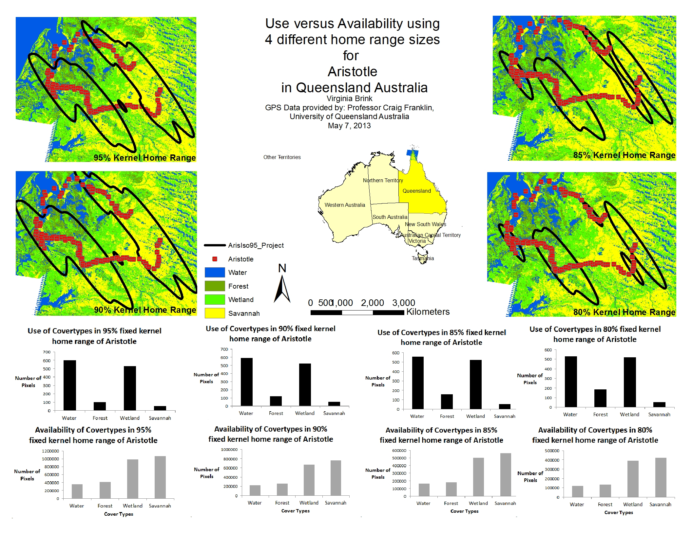
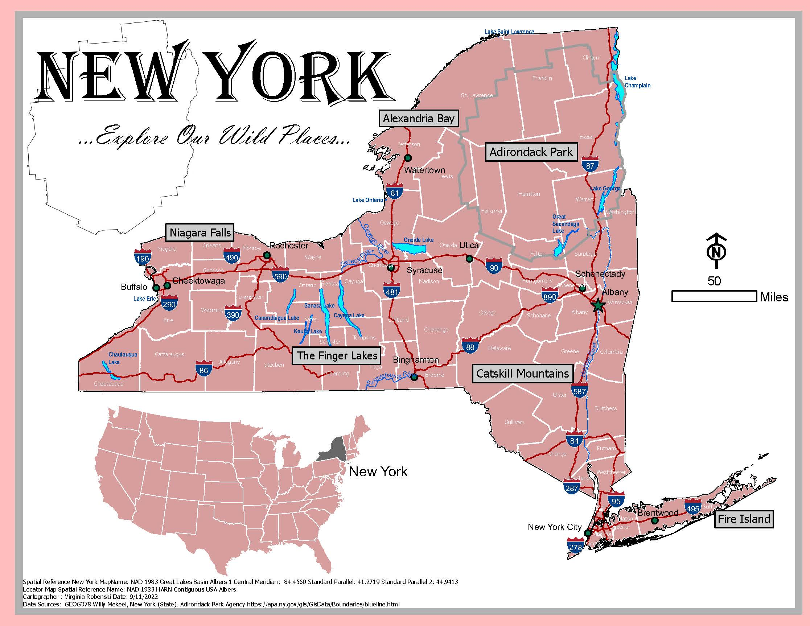

Welcome to my website! This is my first attempt at HTML! Which leads me into a little about myself! I love the outdoors, hunting, hiking, crossfit, my dogs, and learning new skills. I have been out of school since 2014. Then, in 2022, I decided to go for my Masters at UW and pursue a degree in GIS Development. I am very interested in learning as much as I can about coding in general, and how to better manage data, and databases behind the scenes of a GIS. Usually you can find me hanging outside with my dogs enjoying the sunshine at home.
Check out My LinkedIn Page.
Paul Smiths College - Undergraduate Degree GIS Work
Use Vs. Availability Analysis
For a project in my Advanced GIS Class. I decided to conduct a raster analysis using landsat data, Erdas Imagine, and Telemetry data for 3 individual saltwater crocodiles. Below you can see the the results presented .



Feral Camel Movement Project
During our senior year, for our Geospatial Analysis class, my classmate and I decided to do a landsat analysis on camel movement, and run a Use Vs. Availability Analysis based on their movments through their homerange. Please find below the poster presentation that summarizes the whole project.
click here to
download the PDF file.
TL2 Landcover Project
In an Advanced Geospatial Analysis class, 3 classmates and I worked on an initial landcover dataset, for a protected region in the Congo. The below prezi presentation was developed for a talk we gave at a GIS conference in the summer of 2014.
Post Undergraduate Work - Biological Objectives for the Gulf
The Biological Objectives for the Gulf Coast (BOGC) project was a position I applied to in the summer of 2015. What was supposed to be a short term project, turned in a few years of exciting learning experiences. We worked with many experts and developed datasets using already existing data. Below you can see our project page, where our publications are, as well as an overview of the entire project. This was my first position in the GIS field, and taught me so much.
Check out The BOGC Project Page.
Graduate Work
Introduction to Cartography~ This work below were assignments I completed in my first cartography class, at UW.

Graphic Design in Cartography ~ This work below were assignments I completed in my second cartography class, at UW.
click here to
download the PDF file.
Resume
click here to
download the PDF file.